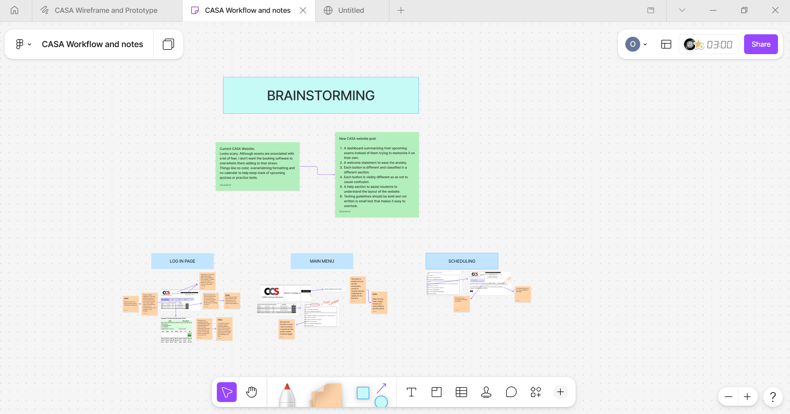

<div class="case-study-container">
  <main>
    <section class="case-study-discovery">
      <h2>Project Discovery: CASA Workflow</h2>
      <p>
        To kick off the project, I needed to synthesize early research requirements. 
        I mapped out the core system workflows to align structural architecture before moving to high-fidelity layouts.
      </p>

      <figure class="portfolio-image">
        
        <figcaption>Initial ideation phase in FigJam mapping out the CASA user flows and core menus.</figcaption>
      </figure>
    </section>
  </main>
</div>
